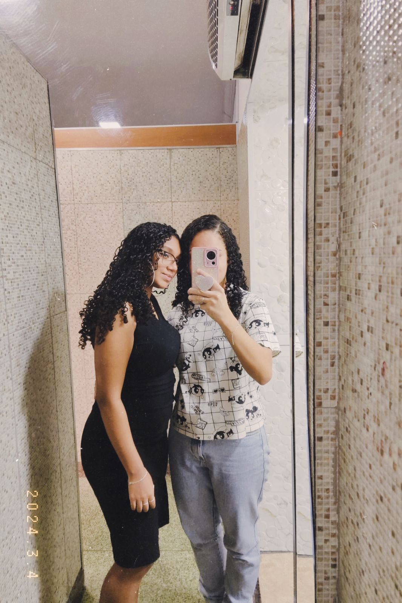

Para meu brigadeiro
Hoje é dia 24/06/2024, combinamos de ir na casa da Taty hoje e vou ter que acordar bem cedo mas aqui estou eu 01:27 da madrugada fazendo isso KKKKKKKKKKKKKKKK tive essa ideia do nada, apenas surgiu na minha cabeça e eu pensei "por que não??" é uma coisa tão diferente e unica de se fazer pra alguem que amamos e no meu caso é você meu bem!!
Não sei muito o que dizer, te digo todos os dias o tanto que eu te amo e nessa carta não vai ser diferente, e se você enjoar???? ai meudeus, não sei quando irei terminar esse projeto e estou com muito medo dele não ficar bom, não quero que seja uma netflix da vida mas quero que seja especial e importante pra e quero muito que esteja lindo, você merece a carta digital mais linda do mundo meu amor!!!
Esse final de semana você dormiu aqui e acho que nunca dormimos com tanto medo na vida KKKKKKKKKKKK foi tão gostoso e incrivel dormir com você (sempre é), é tão bom estar na sua companhia amor, meu coração se quebrou em mil pedaços por você ter que ir embora :( queria poder parar o tempo quando estou com você quando estamos juntas o tempo passa muito rapido (mim odeia isso) rumm
Acredito que tudo o que vai estar escrito aqui eu ja te falei e te falarei todos os dias da minha vida, com certeza ja coloquei nas cartas que eu te dei e nos textos no whatsApp, ja disse que to com medo de isso dar errado??? Faz alguns minutos que eu te contei o que estou fazendo e você ja esta morrendo de ansiedade KKKKKKKKKKKKKKK estamos nos declarando uma pra outra eu amo isso, acho engraçado que logo eu que não gostava de falar sobre sentimentos hoje é o eu mais gosto de fazer quando estou com você, é bom olhar pro passado e vê como as coisas mudaram, como a gente mudou, e como fazemos isso dar certo, eu jamais imaginaria que iria te namorar, jamais imaginaria que iria amar alguem e você chegou na minha vida e mudou tudo, me mudou, você é luz na minha vida, você me tirou da escuridão que eu me coloquei. Em muitos momentos da minha vida eu me senti sozinha, sem ngm, sem amor, com feridas que pensei que jamais se curariam, carregando meu passado nas costas sem ngm pra dividir esse fardo comigo, e então eu percebi que com você eu não me sentia sozinha, eu não me sentia triste, você foi trazendo cor pra minha vida preta e branca, cada dia que nos conheciamos mais e mais eu ficava dividida porque parte minha não queria ter alguem, parte de mim me dizia que eu merecia estar sozinha e quando soube que você gostava de mim parte minha dizia que eu não era boa o bastante pra você, ficava aquela voz na minha cabeça dizendo que tudo o que eu te daria seria dor e eu não queria fazer isso, eu não queria te machucar, tudo o que eu queria era ficar com você mas existia aquela briga interna comigo mesma todos os dias. Graças a Deus eu venci isso e você me ajudou, você me ajudou todos os dias desde de que aceitou a falar comigo e eu serei eternamente agradecida.
Hoje é dia 26/06/2024, hoje aconteceram tantas coisas que so por Deus, vc quase foi de arrasta e eu estorei o pneu da auto escola KKKKKKKKKKKKKKKKKKKKKKKKKK fiquei mt triste com as duas coisas, não quero perder vc amor e morro de medo disso d vdd, vc é tão importante na minha vida e eu nao sei o que seria da minha vida sem você e nem quero saber ( imagine emoji das mãos religiosas ) não sei se vai gostar disso mas espero que sim, eu te amo muito amor e sinto saudade de vc todo segundo da minha vida, esqueci de dizer fomos na casa da taty e eu adorei tantooooooo, principalmente jogar videogame, é tão maravilhoso estar com vc e com sua familia, vejo eles como minha familia tbm apesar de ainda ter mta vergonha perto deles KKKKKKKKKKKKKKKKKKKK queria mt ver sua reação ao ver isso, estou lendo o lado feio do amor e estou adorando ate agora amor. vc é a mulher mais incrivel, maravilhosa e inteligente q eu ja vi na vida e quero que saiba tudo de bom que eu sinto por vc todos os dias amor, eu te amo pra smp!!